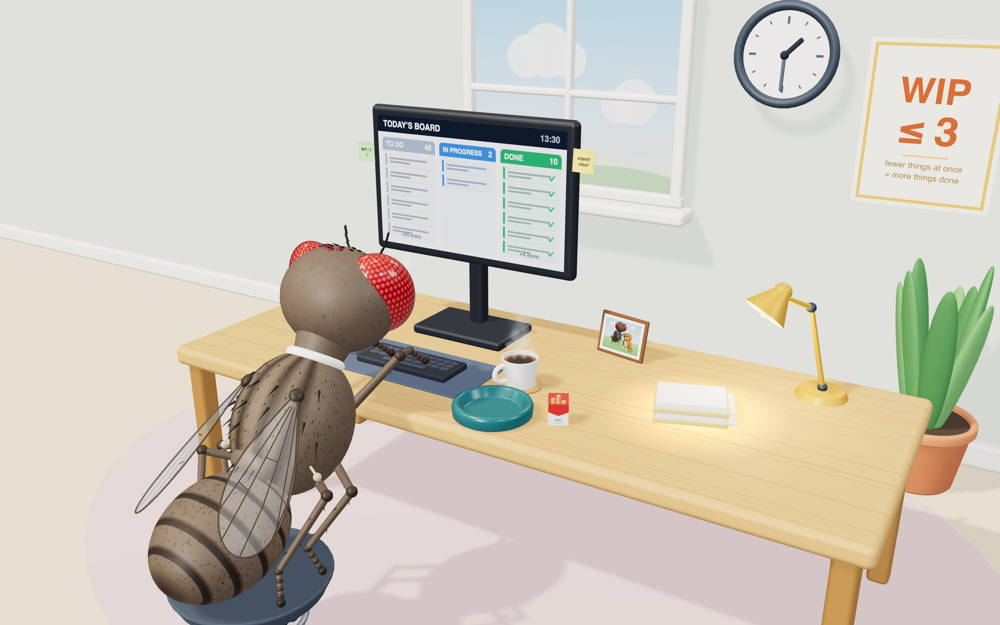
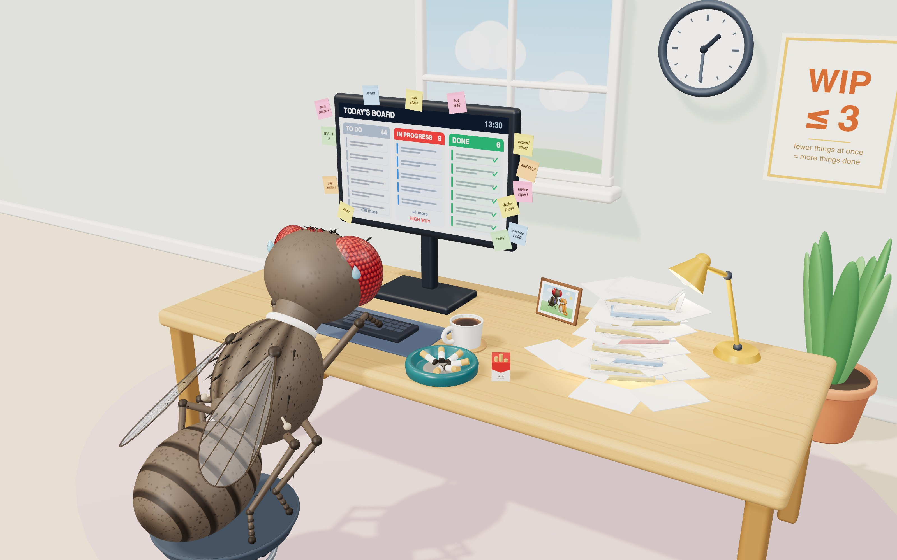
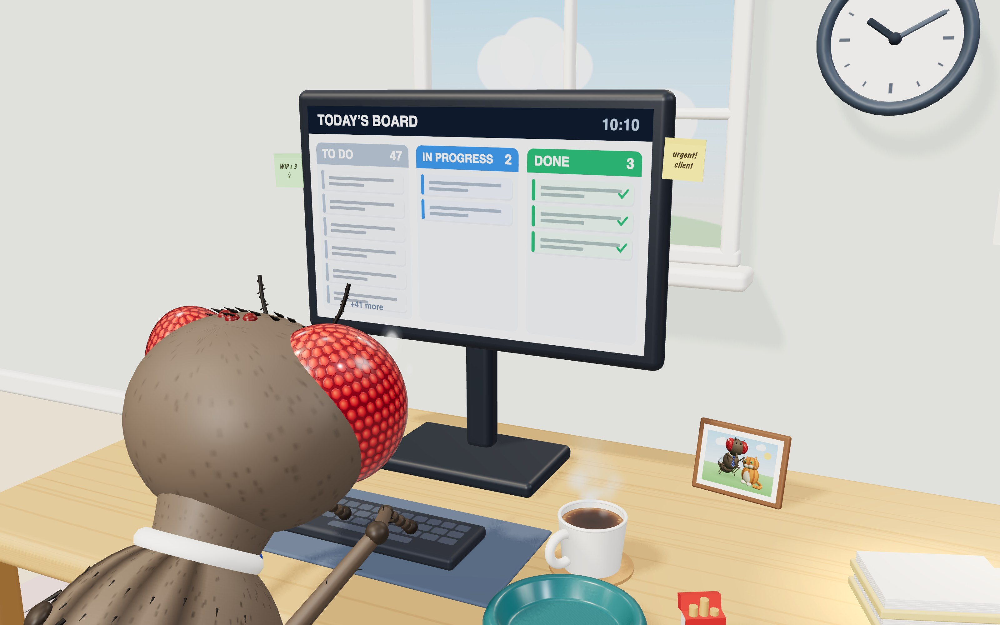
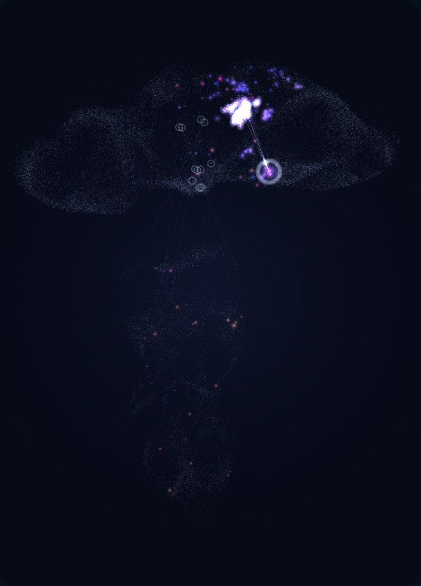
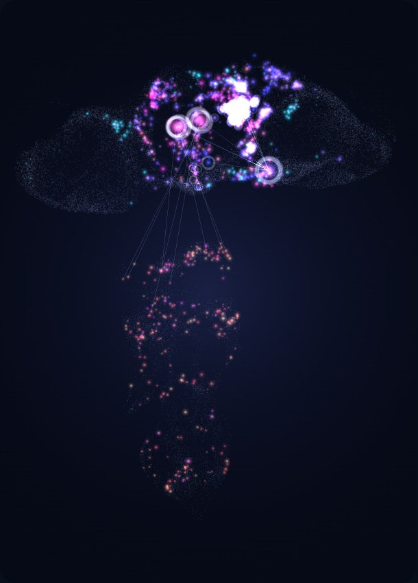

Being busy all the time isn’t the same as making progress
Finish more by starting less. A game with a real fly that shows why it pays to limit work in progress
Felipe Fernández · October 2026 · updated November 2026
Inside, a real fly brain Male CNS v1.0 · CC BY 4.0
Summary
If you only read one page
Finish more by starting less. Mosca del WIP is a browser game. A fly in a tie gets through an office day in one minute, and you choose how many tasks she has open at once.
In the simulation, average of 200 days. Green, 2. Red, 9.
The simulation, in four ideas.
1
Being busy all the time isn’t making progress.
With 9 tasks she finished half as many as with 2.
2
A low limit, but not 1.
With 2 she finished more than with any other.
3
What’s started doesn’t disappear.
Going from 10 to 2 took over two hours to get back to 2.
Monday, 9 a.m. Three things left over from yesterday, two emails waiting for an answer, the report, a colleague’s emergency and the two things you meant to finish today. Nine things open. You work nonstop. By 6 you haven’t closed a single one.


In the game, at half past one, with 2 tasks at once and with 9.
Almost all of us work like this. This report shows, with a fly, how many things it pays to keep open.
Underneath is a simulated experiment, with rules based on studies and a real fly brain. One fly on one day, it measures neither people nor teams, and every number says whether it comes from the game, the simulation or studies.
What you can do with itread it in 10 minutes · play it at mosca.deliverycraft.ai · try it with your team (page 11).
Fun factFive Nobel Prizes in Medicine have gone to work done with this fly, the first in 1933 and the most recent in 2017. (nobelprize.org)
Mosca del WIP · Felipe Fernández
The star and her rules
A real fly in a make-believe office, with rules you can see
Your desk, on a screen. A three-column board, coffee, an ashtray and an office worker in a tie.

The fly at her board, To do, In progress and Done.
Her brain is real (page 9), but her office is a game. Before starting the day you choose how many tasks she can have in progress at once, from 1 to 10. Teams call this a work-in-progress (WIP) limit. Then she works, switches tasks, waits for answers and, if overwhelmed, goes out for a smoke. During the day you can send her an urgent task with a button (page 10).
The rules of her world, and the reference behind each one
The rule
Inspired by
We played 200 days with each number and averaged. The table from 1 to 10 is on the next page.
Fun factIn 2024 the first complete map of an adult brain was published, a fly’s, with about 139,000 neurons and 50 million connections. (Dorkenwald et al., 2024)
Mosca del WIP · Felipe Fernández
From 1 to 10 tasks
There’s no number where everything breaks. Each extra task costs a little more
Each row is an average day out of 200, in the game, with that number of tasks at once.
Tasks at once
Finished
Time per task
Useful minutes per hour
Cigarettes
Stress at day’s end
Shaded, the two days from page 2, green for 2 and red for 9. Time per task in office hours. The other columns are in Appendix B.
With 9 she was busy all day, but she jumps between tasks, loses a while retaking each one and goes out to smoke. With 2, each task took an hour and she had time for five coffees.
With 1 she sits waiting when her only task gets stuck, and finishes less than with 2. From 2 to 3 she finishes almost the same and ends the day calm. From 4 on, each extra task makes everything worse. It shows in the fly before the board.
The sign says up to 3 because it measures stress. The table marks 2 because it measures what gets finished. The difference is our assumption, the cost of switching tasks (Appendix B).
Fun factIn the lab, each task switch costs a few tenths of a second, and more if the task is hard. Over a day full of switches it adds up. (Rubinstein, Meyer and Evans, 2001)
Mosca del WIP · Felipe Fernández
The paradox
With more tasks she never runs out of things to do, but each one spends more time waiting
There are two ways to be efficient, being busy all the time (resource efficiency) or keeping the work moving without waiting (flow efficiency). Optimizing the first hurts the second (Modig and Åhlström, 2012).
In the game. With 9 tasks she has something to do 100% of the day, but each task moves only 9% of the time it’s open.
With today’s waits, from 3 tasks on she has enough to do all day, and opening more only puts tasks in line to wait. In factories that point is called “critical WIP” (Hopp and Spearman, Factory Physics).
That each task takes longer with more open is almost just splitting time among all of them, math and not a finding.
The theory only says what gets finished stops going up. That it also drops comes from our rules, the cost of switching tasks and the cigarettes.
Fun factThat each task takes longer when more are open isn’t an opinion but a theorem, from 1961. (Little’s law)
Mosca del WIP · Felipe Fernández
The limit
Your ideal limit depends on how much you wait on others
The obvious question is whether one thing at a time is best. We tried 20 combinations of rules, and in 16 of the 17 cases with waits the best limit landed between 2 and 4.
In the simulation, finished per day. The circle marks the best.
Waits push toward more tasks, because if one gets stuck it helps to have another at hand. Switching tasks pushes toward fewer, because every jump has a cost. Your limit sits between the two.
That 2 to 4 comes from the simulation, not science, and your team has its own. The fly can’t unblock what she waits for, but a team can, and that’s what DORA recommends (page 8), go after the wait instead of opening something else.
Reducing waits lets you lower the limit. Raising the limit doesn’t reduce the waits.
Fun factFor DORA, Google’s research program on software teams, the ideal would be to work on a single thing at a time, and it proposes that as the direction. (dora.dev)
Mosca del WIP · Felipe Fernández
What’s started doesn’t disappear
Lowering the limit doesn’t calm her at once. What’s started takes over 2 hours to clear
Say that at noon you get organized and go from ten open things down to two. In the game the ten are still there, so she takes no new ones and closes the ones she has.
In the game, average of 200 days. 10 at once, and at 12:00 the limit drops to 2.
Only at 14:35 does she have two open again, with every set of rules we tried. The time she calms down, 15:07, does depend on how we modeled stress, which rises fast and falls slowly.
Sustainable means something simple, that the fly lasts the whole day without collapsing. The idea is years old, not just in software.
In British munitions factories during World War I, those who worked 70 hours a week produced almost the same as those who worked 56.Pencavel (2015), The Economic Journal.
Fun factIn the lab, the stress hormone peaks in 20 to 40 minutes and takes longer to come down. (Dickerson and Kemeny, 2004)
Mosca del WIP · Felipe Fernández
With real people
It’s not just the fly. Judges, recruiters and teams point in the same direction
Maybe you’re thinking this is a game, and with a fly at that. You’re right. No study with people gives a number, but the ones we found point the same way.
Italian judges
Judges who carried more cases at once, because of the lottery that assigned them, took longer to close them. The quality of their rulings didn’t change.
Coviello, Ichino and Persico (2014), American Economic Review
Recruiters
A bit of parallel work helped them finish more, but past a point they finished less.
Aral, Brynjolfsson and Van Alstyne (2012), Information Systems Research
Research teams
Teams whose members were on very few or too many teams at once performed worse than those at a middle point.
Bertolotti et al. (2015), Research Policy
Large surveys of software teams
Limiting work in progress helps teams deliver better, especially together with visible boards and data on what happens in production.
DORA, “Work in process limits” (dora.dev) · Forsgren, Humble and Kim (2018), Accelerate
Real offices
At three large companies, researchers tracked 137 people over 3,200 workdays. They switched applications or web pages almost 1,200 times a day and lost almost 4 hours a week getting reoriented, 9% of their time. It measures screen switches, not open things.
Murty, Dadlani and Das (2022), Harvard Business Review, “How Much Time and Energy Do We Waste Toggling Between Applications?”
None of them is a lab experiment. The judges study comes close, because a lottery decided who got more cases. The rest show that things go together, but don’t prove the cause.
None measured how many things it’s best to have open. They measured what happens when there are too many, and found more delay, less finished or both. The fly doesn’t add a proof. It puts that direction on a screen so your team can see it before arguing about it.
That’s four studies and a survey. None gives a number, so you’ll have to measure yours.
Fun factIn a 2008 experiment, people interrupted while answering emails finished a little sooner and just as well, but with more stress and more rush. (Mark, Gudith and Klocke, 2008)
Mosca del WIP · Felipe Fernández
The disguise and the brain
The fly doesn’t smoke. The cigarette disguises her antenna cleaning, and her brain is real
A fly doesn’t smoke or know what a task is, so we translate the office into something she does feel.
In the officeLots of open tasksMore tasks, a stronger irritation.
→
In the flyA touch on the antenna, like dustIt switches on the circuit she uses to clean her antennae.
→
Back in the officeThe cigaretteCleaning herself is drawn as going out for a smoke. The game decides how many cigarettes she smokes.
In the officeA break with little stress
→
In the flyA taste of sugarIt’s the signal that makes the fly extend her proboscis to eat.
→
Back in the officeThe coffeeIn the simulation this signal didn’t move the proboscis, so the coffee is just a drawing.
Only these two stimuli. We never used pain.
With 2 tasks at once

With 9 tasks at once

The brain on top, the nerve cord below
In the simulation, 423 neurons firing with 2 tasks and 1,328 with 9.
According to studies, smoking doesn’t calm you down. The coffee shows up only with little stress, because caffeine raises the stress hormone. What helps is the break.
The lights come from a real map. A public project traced the central nervous system of a male fruit fly, 166,700 neurons with their connections. Each neuron is simulated as a glass with a small hole that spills into the next ones, and it got 9 of 10 predictions right in living flies (Shiu et al., 2024). Making the tasks dust on the antenna was our choice. The brain reacts to the irritation and proves none of the game’s lessons.
Fun factYour brain has about 86 billion neurons. The fly’s entire central nervous system, 166,700. (Azevedo et al., 2009, and Berg et al., 2026)
Mosca del WIP · Felipe Fernández
Urgent tasks
With urgent tasks the best limit is still 2, and each one costs a regular task
We added urgent tasks that arrive unannounced, jump the limit and get done right away, one at a time.
In the simulation. Regular tasks finished, by limit.
In the simulation, with limit 2 or with limit 10
No urgent tasks
1 a day
2 a day
3 a day
5 a day
In the simulation, 200 days per combination, with 0, 1, 2, 3 and 5 a day and every limit from 1 to 10. Our rule, inspired by the kanban expedite lane (Anderson, 2010, secondary source) and by studies of interruptions (Mark et al., 2005 and 2008, and Perlow, 1999), with no extra stress from the interruption. Last row, the variant where the urgent task waits in line like a regular one.
Each urgent task costs one regular task, nothing more. Raising the limit doesn’t help it, because with more things half-done it takes longer too.
If it waits in line like a regular task, the regular ones don’t suffer and it takes twice as long. You’re choosing whom to keep waiting, and it follows almost by construction, because respecting the limit leaves the limit unchanged.
One fly, no slack, one day. That fits one saturated person, not a team that shares them out, and nobody has measured it with people.
With your team, urgent tasks one at a time, over the limit. Count how many arrive a week and discuss it with data.
Fun factIn real offices, interrupted work gets picked up again twenty-some minutes later, with other things in between. (Mark, González and Harris, 2005)
Mosca del WIP · Felipe Fernández
What to do with this
Four steps to try a limit with your team
The game doesn’t tell you your number, because the fly works alone and your team hands work off and helps each other. Four steps to find it.
1
Make the work visible
Three columns are enough, to do, in progress, done. What you can’t see, you can’t limit.
2
Count what’s open and set a limit
Count how many things each person has open today. Agree on a low limit, write it on the board and stick to it. With unavoidable waits, not one.
3
When someone is left waiting, go after the wait
Don’t open something else to "make good use of the time", help unblock what’s waiting. With fewer waits, the limit can go down.
4
Try it for two weeks and measure
On each card, note the day it started and the day it finished. After two weeks, compare how many got finished and how long each one took.
A limit aims for each thing getting done sooner, work waiting less and a pace you can keep. It isn’t a guarantee. Limiting work in progress is a habit of high-performing teams, according to DORA, and it helps most with a visible board and data on what happens in production. Don’t expect the change on day one, because what’s started takes time to clear.
The first step needs no meeting. Count now how many things you have open. The workshop kit is free at mosca.deliverycraft.ai/en/workshop/, in Spanish for now.
Further reading
Popular books and a practical guide that tell the same idea in other words.
Modig and Åhlström, This is Lean (2012): the two efficiencies.
Goldratt and Cox, The Goal (1984): go after the bottleneck instead of loading on more.
McKeown, Essentialism (2014): less but better.
Newport, Slow Productivity (2024): “pseudo-productivity,” mistaking visible activity for progress.
DORA, Work in process limits (dora.dev): free and practical.
A sustainable limit, not one thing at a time.
Fun factA Norwegian software company started working with a board and work-in-progress limits. The time it took to fix a bug dropped from 12 to 5 days. (Sjøberg, Johnsen and Solberg, 2012)
Mosca del WIP · Felipe Fernández
Appendices
For anyone who wants to check
To follow the story, what came before is enough. These three pages are for checking where everything comes from.
A
Is it real?What’s math, what comes from studies and what we added.
B
The numbersThe columns missing from page 4, where each number comes from and how we tested that the result holds.
C
Sources and creditsWhere each idea comes from.
Mosca del WIP · Appendices
Appendix A ·Is it real?
What’s math, what comes from studies and what we added
Every claim, with its origin. The direction is backed by evidence and the numbers come from the game.
What we say
What it is
Why
The limits of this experiment
A single fly. No handoffs, help between people or urgent tasks shared out.
A single day. Each morning starts the same. A week’s fatigue isn’t in the game.
It doesn’t measure people. It’s a computer experiment. Testing it with real teams would be another project.
The brain doesn’t decide. It shows how a fly reacts to an irritation. The rules are ours.
Types of evidence, strongest first (page 8). Experiment, one thing changed on purpose (none of those cited) · field study with a cause, a lottery decides (the judges) · field study, what goes with what (recruiters, teams, offices) · survey (DORA) · simulation, rules on a computer (the fly).
Mosca del WIP · Felipe Fernández
Appendix B ·The numbers
Changing the rules barely moves the best limit, but it does change how much output drops
It all comes from the same game. 200 days for each number of tasks, and then the same again, changing the rules one at a time.
What the table on page 4 doesn’t show (average of 200 days)
Tasks at once
1
2 · finishes the most
3
4
5
6
7
8
9 · overload
10
Green, the 2, which finishes the most. Red, the 9, the day in the photos. Has something to do and how much each task moves are the two curves on page 5.
Each number and where it comes from
The rule and the number we use
The study that inspires it
Which part is ours
Changing the rules, with how much waiting, which limit works best
Tasks that get stuck waiting on someone else
Best limit with today’s rules
If switching tasks cost nothing
If it cost much more
Has enough to do all day from
In parentheses, the ones that finish almost the same. In 16 of the 17 cases with waits the best landed between 2 and 4, and with no waits, 1. How much output drops with 10 tasks changes with the cost of switching, 21% with no cost, 55% today and 79% with full Weinberg. Going from 10 down to 2 at 12:00 took from 2 h 14 min to 3 h 25 min to get back to 2 open (5 cases). The rules and the criteria were written before running, and no number was adjusted afterward.
Mosca del WIP · Felipe Fernández
Appendix C ·Sources and credits
Where each idea comes from
Only sources we verified. They back the direction of the game, not its numbers.
Flow and queues
More open tasks, more time per taskIf the same amount comes out and there’s more inside, each one takes longer. Little (1961), Operations Research, 9(3).
The two efficienciesBeing busy or keeping the work flowing. A popular book, not a study. Modig and Åhlström (2012), This is Lean.
Critical WIPPast a certain point, more open work only makes the wait longer. Hopp and Spearman, Factory Physics (1996 and later editions).
People and teams
Judges: more juggling, more delayWith more cases at once, each one took longer, and quality didn’t change. Coviello, Ichino and Persico (2014), American Economic Review, 104(2), and (2015), J. of the European Economic Association, 13(5).
Recruiters: neither too little nor too muchAral, Brynjolfsson and Van Alstyne (2012), Information Systems Research, 23(3).
Teams at once: a middle pointBertolotti et al. (2015), Research Policy, 44(4).
Limits help, with a board and production dataInstead of raising the limit when someone is waiting, help unblock the work. DORA, dora.dev/capabilities/wip-limits (CC BY 4.0). Forsgren, Humble and Kim (2018), Accelerate.
Offices: switching screens has a cost137 people, almost 1,200 application switches a day and almost 4 hours a week getting reoriented. Murty, Dadlani and Das (2022), Harvard Business Review, “How Much Time and Energy Do We Waste Toggling Between Applications?”.
A real team with a board and limitsFixing a bug dropped from 12 to 5 days with a board and limits. A single case. Sjøberg, Johnsen and Solberg (2012), IEEE Software, 29(5).
Long hours yield less and lessMunitions factories, 1914–1918. Past a certain point, each extra hour yielded less. Pencavel (2015), The Economic Journal, 125(589).
Task switching, stress, tobacco and coffee
Every task switch has a costTenths of a second that add up. Weinberg’s “20% per project” table is a rule of thumb, not a measurement. Rubinstein, Meyer and Evans (2001), J. of Experimental Psychology: HPP, 27(4). Weinberg (1992), Quality Software Management, vol. 1.
What’s left half-done stays on your mindLeroy (2009), Organizational Behavior and Human Decision Processes, 109(2).
Interruptions are stressfulThose interrupted worked a little faster and just as well, but with more stress and more rush. Mark, Gudith and Klocke (2008), CHI ’08.
Stress rises fast and falls slowlyThe stress hormone peaks in 20 to 40 minutes, in the lab. Dickerson and Kemeny (2004), Psychological Bulletin, 130(3).
Smoking doesn’t calm you downIt gives brief relief and a rebound, and people who quit have less stress. Parrott (1999), American Psychologist, 54(10). Taylor et al. (2014), BMJ, 348.
The break helps, and caffeine raises cortisolAcross 22 studies, short breaks raised energy and lowered fatigue. Caffeine raises cortisol. Albulescu et al. (2022), PLOS ONE, 17(8). Lovallo et al. (2005), Psychosomatic Medicine, 67(5), and (2006), Pharmacol. Biochem. Behav., 83(3).
Urgent tasks and interruptions
Interrupted work is picked up much laterMore than half of the work gets interrupted, and it is picked up again twenty-some minutes later, with other things in between. Mark, González and Harris (2005), CHI 2005, ACM, 321–330.
Many urgent tasks could have waitedNine months with a software team. Many interruptions could have waited, and interruption-free hours helped while the study lasted. We don’t use its percentages. Perlow (1999), Administrative Science Quarterly, 44(1).
The kanban expedite laneOne urgent item at a time, outside the limit and used very sparingly. A practice, not a study. Secondary source. Anderson (2010), Kanban, Blue Hole Press, ch. 11.
The fly and her brain
How she cleans her antennaeSensors in the antenna, relay neurons and the ones that give the order to the legs. Hampel et al. (2015, 2020), eLife. Seeds et al. (2014), eLife.
Simulating the brain from its mapA simple model on the real wiring got 9 out of 10 predictions right. With the connections shuffled at random, the cleaning disappears. Shiu et al. (2024), Nature, 634.
The map of the male fly166,700 neurons of the central nervous system, and we simulate 164,587, the ones whose connections are complete. Berg et al. (2026), Cell, 189(18).
The first complete map of an adult brainAbout 139,000 neurons and 50 million connections, in a female and without the nerve cord. The one in the game is the male fly’s map. Dorkenwald et al. (2024), Nature, 634.
The fly in scienceFive Nobel Prizes in Medicine with flies (1933, 1946, 1995, 2011, 2017) and the neurons in the human brain. nobelprize.org/drosophila and the 1946 and 1995 summaries at nobelprize.org. Azevedo et al. (2009), J. of Comparative Neurology, 513(5).
Brain data: Male CNS v1.0. This project is a collaboration between FlyEM (HHMI Janelia), the University of Cambridge (Dept. of Zoology), the MRC Laboratory of Molecular Biology, and Google Research.The Male CNS dataset is licensed under CC-BY. License CC BY 4.0 · male-cns.janelia.org.
Images: all come from the Mosca del WIP game and its cover art. Author: Felipe Fernández, October 2026 · updated November 2026. This is the English version of the original report in Spanish.